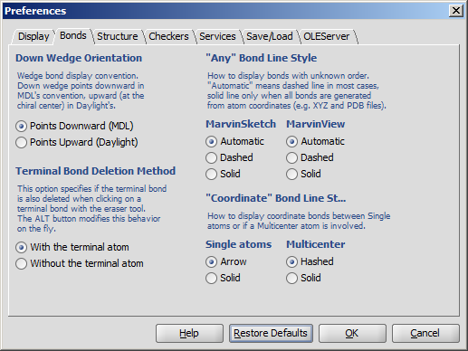

MarvinSketch : Bonds MS

- Down Wedge Orientation allows changing the wedge bond display convention. Down wedge points downward in MDL's convention, upward (at the chiral center) in Daylight's.
- "Any" Bond Line Style offers three different modes to display bonds of unknown types: Automatic, Dashed and Solid. This option can be separately set to be used in MarvinSketch and MarvinView.
- Terminal Bond Deletion Method offers 2 ways to delete the terminal bond of a molecule: only the bond is deleted or the terminal atom disappears with the bond.
- "Coordinate" Bond Line Style allows changing the type of coordinate bonds from the default ones (arrow for single atom and hashed for multicenter) to solid.